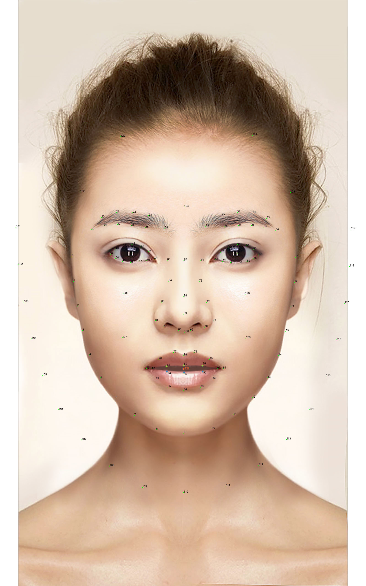

工具操作说明:
点击下方的菜单可以看到变形前后的图像。
在下方输入框输入变形配置数据， 然后点击应用改变， 可以得到改变之后的效果.
{ "type" : "bloatWrinkle", "target" : "95", "intensity" : -0.7, "radius" : 1.0 }, { "type" : "bloatWrinkle", "target" : "96", "intensity" : -0.7, "radius" : 1.0 }, { "type" : "forward", "start" : "5", "end" : "75", "intensity" : 0.2, "radius" : 0.8 }, { "type" : "forward", "start" : "13", "end" : "81", "intensity" : 0.2, "radius" : 0.8 }, { "type" : "bloatWrinkle2", "target" : "97", "intensity" : 0.3, "outerRadius" : [1.0, 1.6], "innerRadius" : [0.5, 0.8] }
